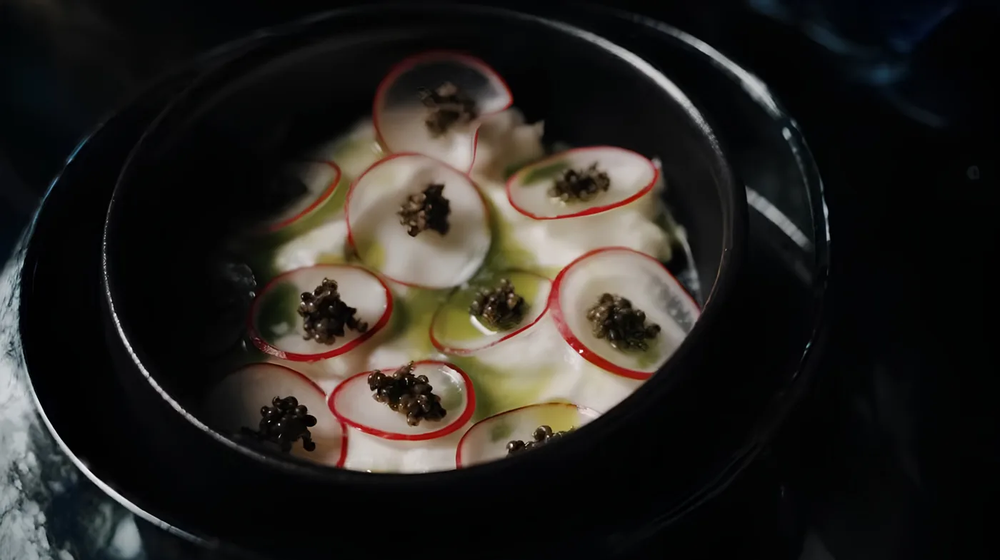

처음 오시는 분께
먼저, ETHICA의 이야기를 그대로.
지구 46억 년의 이야기를 8개의 접시로 오가는 'ETHICA 컬렉션'. 고민되신다면 먼저 이 코스부터.
가장 많은 분들이 선택하는 코스입니다.
- 추천
- ETHICA 컬렉션
- 좌석·인원
- 테이블석·1~8명
- 코스
- 총 8장
긴자 ETHICA | 미쉐린 2스타 MAZ 출신 셰프의 이노베이티브(페루 요리×프렌치 기법) · 미쉐린 가이드 도쿄 3년 연속 셀렉티드 선정

Philosophy

메뉴에 적힌 것은 요리 이름이 아니라 '지구의 탄생', '공룡의 시대와 대멸종' 같은 시대의 이름뿐. 무엇이 나올지는 접시가 눈앞에 놓이는 순간에야 알 수 있습니다. 지구가 태어나던 무렵의 풍경, 문명마다 길러 온 지혜와 기법, 향신료를 현대의 기술로 재구성해 하나의 이야기로 코스를 엮었습니다. 이곳에서 보내는 몇 시간이 식사를 넘어선 기억으로 마음에 남기를 바랍니다.
시공간의 조각을 한 접시씩 응축해, 오감을 울리는 여정으로 빚어냅니다.
Cenote
긴자에 홀연히 나타난, 고대 중남미 문명의 성스러운 샘 '세노테'.
땅은 깊을수록 더 오래된 시대의 지층입니다. 세노테의 물 밑에는 빙하기에 생긴 종유석이 지금도 잠겨 있습니다.
푸른 테이블은 그 수면. 한 접시마다 서로 다른 시대의 깊이까지 잠수합니다. 첫 번째 접시는 38억 년 전의 바다. 세 번째 접시에서 가장 깊은 46억 년 전에 닿습니다. 그곳에서 떠올랐다가 마지막에 다시 한번 깊이 잠수하는, 총 8장의 여정입니다.
첫 번째 접시,38억 년 전
최초의 생명이 태어났다고 전해지는 심해의 열수에서. 가을 가다랑어로 여정이 시작됩니다.
↑떠올라, 35억 년 앞으로
두 번째 접시,3억 년 전
등뼈를 가진 생물이 바다에서 육지로. 불 조절을 섬세하게 맞춘 사슴고기 요리.
↓깊이 잠수해, 43억 년을 거슬러
세 번째 접시,46억 년 전
더 거슬러 올라, 갓 태어나 불타오르던 지구로. 홍합 요리.
↑떠올라, 41억 년 앞으로
네 번째 접시,5억 년 전
식물이 육지로 올라오고, 흙 속에 균사의 그물망이 퍼져 갑니다. 무지개송어로 그려냅니다.
↑떠올라, 3억 년 앞으로
다섯 번째 접시,2억 년 전
공룡의 시대, 그리고 그 끝. 기름이 오른 삼치 요리.
↑떠올라, 1억 3,400만 년 앞으로
여섯 번째 접시,6600만 년 전
공룡의 뒤를 이은 포유류의 시대. 돼지 목살로.
↑떠올라, 약 6,600만 년 앞으로
일곱 번째 접시,500년 전
500년 전, 바다를 건너 식재료가 오가던 시대를 온주밀감으로.
↓깊이 잠수해, 약 4억 년을 거슬러
여덟 번째 접시,4억 년 전
마지막으로 다시 한번 거슬러 올라, 곤충과 꽃의 시대로. 피날레는 안데스의 과일 루쿠마로 만든 디저트입니다.
↑수면으로 떠올라, 약 4억 년 앞으로
지금
여정의 끝에서. 그리고 지금의 긴자로.
ETHICA 컬렉션 · 2026년 가을의 구성입니다. 식재료는 계절과 수급에 따라 바뀝니다.
Plates
지금까지 선보인 요리 중에서. 같은 시대의 장이라도 계절이 바뀌면 접시 위 풍경도 달라집니다.




Executive Chef
미쉐린 2스타 MAZ 출신의 마쓰나에 총괄 셰프. 페루 요리로 다져 온 맛을 바탕으로, 그 땅의 역사와 기억을 접시에 담아냅니다. 지금 긴자에서 추구하는 것은 지구의 기억과 문명의 역사까지 비추는 한 접시입니다.
MASAO ANDRÉS MATSUNAE GUZMÁN
MAZ(2스타·이노베이티브), Koho(1스타·중식)은 물론 일식, 프렌치, 이탈리안, 스패니시까지 두루 경험하며 자신만의 요리를 만들어 왔습니다.
The Cave
암벽에 둘러싸이고 조명을 낮춘 동굴 같은 공간. 긴자 거리에서 한 걸음 들어서면 여정이 시작됩니다. 총 24석. 이용 목적에 맞춰 세 가지 좌석을 마련했습니다.


Occasions
소중한 밤의 준비는 저희에게 맡겨 주십시오.
처음 오시는 분께
지구 46억 년의 이야기를 8개의 접시로 오가는 'ETHICA 컬렉션'. 고민되신다면 먼저 이 코스부터.
가장 많은 분들이 선택하는 코스입니다.
두 번째 방문부터
컬렉션의 이야기를 희귀한 식재료로 업그레이드해 총 9장으로 넓힌 'ETHICA 그랜드 컬렉션'. 조금 더 길고 깊게 여행하고 싶은 밤에.
식재료는 계절과 수급에 따라 바뀝니다. 지난번과는 다른 풍경을.

생일·기념일에
희귀한 식재료로 업그레이드한 'ETHICA 그랜드 컬렉션' 총 9장에 손으로 그린 메시지 플레이트를 곁들여 축하해 드립니다. 원하시면 긴자 Calon의 '시들지 않는 꽃다발'도 준비해 드립니다.
특별한 날에는 희귀한 식재료로 모십니다.
데이트에
메뉴에 적힌 것은 시대의 이름뿐. 접시마다 두 분의 이야깃거리가 생겨납니다. 동굴 같은 테이블석에서 총 8장의 여정을. 주방 안에는 하루 한 팀, 두 분까지의 '셰프스 카운터'도 있습니다.
첫 데이트에도, 몇 번째의 밤에도.
비즈니스 다이닝·접대에
플레이팅 스테이션에서 불과 30cm. 주방 안 프라이빗 룸에서 2~4명의 비즈니스 다이닝을. 시장에 좀처럼 나오지 않는 식재료와 숙성시킨 일품으로 그리는 총 9장입니다.
미쉐린 가이드 도쿄 3년 연속 셀렉티드 선정. 긴자역 도보 3분.
식사 후 일정이 있는 밤에
'식사 후 일정이 있다', '술을 중심으로 즐기고 싶다'는 목소리에서 탄생한 쇼트 코스. 화~금은 17:30부터, 토·일은 18:00부터 안내합니다.
이용 시간은 약 1.5시간입니다.
Courses
미쉐린 가이드 도쿄 3년 연속 셀렉티드 선정
고민되신다면 ETHICA를 대표하는 'ETHICA 컬렉션'을 추천합니다. 토·일 런치에도 같은 코스를 준비합니다.
식사 후 일정이 있는 밤에
총 5장·테이블석·1~8명
'식사 후 일정이 있다', '술을 중심으로 즐기고 싶다'는 요청에 맞춰 일부러 가볍게 구성한 총 5장. ETHICA 여정의 서장으로.
14,800세금 포함
예약 가능일 보기처음 오시는 분께
총 8장·테이블석·1~8명
지구 46억 년의 이야기를 8개의 접시로 오가는, ETHICA를 대표하는 코스. 제철 주재료를 안데스 고추 아히 아마리요와 퀴노아로 완성하고, 피날레는 안데스의 과일 루쿠마 디저트로.
19,800세금 포함
이 여정의 예약 가능일 보기특별한 밤에
총 9장·테이블석·1~8명
컬렉션의 이야기를 희귀 식재료로 업그레이드해 총 9장으로 확장했습니다. 조금 더 길고 깊게 여행하고 싶은 밤에.
24,800세금 포함
예약 가능일 보기
데이트·기념일에·1~2명
총 9장·주방 안 프라이빗 카운터·1~2명·하루 한 팀
주방 안, 하루 한 팀만을 위한 카운터. 그랜드 컬렉션을 바탕으로 더 희귀한 부위와 그날만의 식재료를 더해, 셰프가 눈앞에서 완성하는 총 9장.
27,800세금 포함
카운터 예약 가능일 보기
비즈니스 다이닝·접대에·2~4명
총 9장·주방 안 프라이빗 룸·2~4명·하루 한 팀
주방 안, 하루 한 팀만을 위한 프라이빗 룸. 시장에 좀처럼 나오지 않는 식재료와 숙성시킨 일품으로 그려내는 총 9장을, 플레이팅 스테이션에서 불과 30cm 거리에서.
29,800세금 포함
프라이빗 룸 예약 가능일 보기생일·기념일에·2명부터
총 9장·테이블석·2명부터·메시지 플레이트 포함
그랜드 컬렉션 총 9장에 손으로 그린 메시지 플레이트를 곁들여. 46억 년 이야기의 마지막이 소중한 분과의 기념으로 남는 한 접시가 되도록.
25,200세금 포함
기념일 코스 예약 가능일 보기베지테리언 고객께·1~8명
총 8장·테이블석·1~8명
ETHICA의 이야기를 베지테리언 식재료로 따라가는 총 8장. 비건·무슬림 프렌들리 요청도 반영해 드립니다.
19,800세금 포함
예약 가능일 보기요금은 모두 1인 기준·세금 포함입니다.
※ '인기 1위'는 타베로그의 '인기 No.1' 표시(최근 30일간 예약 팀 수가 가장 많은 코스·2026년 10월 기준)에 근거합니다.
Q&A
ETHICA의 이야기를 온전히 따라가는 'ETHICA 컬렉션'(총 8장)을 추천합니다. 식사 후 일정이 있는 날에는 총 5장의 쇼트 코스도 선택하실 수 있습니다.
쇼트 코스(총 5장)는 약 1.5시간, ETHICA 컬렉션(총 8장)은 약 2시간 반, 총 9장의 코스는 2시간 반~3시간 정도 소요됩니다.
손으로 그린 메시지 플레이트를 준비해 드립니다. 생일·기념일 코스를 선택하시거나 예약 시 문의해 주십시오. 긴자 Calon의 '시들지 않는 꽃다발'도 준비할 수 있으니, 원하시면 말씀해 주십시오.
주방 안에 2~4명·하루 한 팀 전용 프라이빗 룸이 있습니다. '가스트로노미 익스피리언스(총 9장)'로 예약해 주십시오.
요리에 맞춘 논알코올 페어링(9,800)을 준비하고 있습니다. 원하시면 예약 시 알려 주십시오.
알레르기는 예약 시 일행분의 알레르기도 함께 알려 주십시오. 베지테리언 ETHICA 컬렉션도 준비되어 있습니다. 비건·무슬림 프렌들리 요청도 예약 시 알려 주시면 준비해 드립니다.
네. 쇼트 코스, ETHICA 컬렉션, 그랜드 컬렉션, 베지테리언 ETHICA 컬렉션, 셰프스 카운터는 1명부터 예약하실 수 있습니다. 생일·기념일 코스와 프라이빗 룸의 가스트로노미 익스피리언스는 2명부터입니다.
스마트 캐주얼 차림으로 방문해 주십시오. 민소매·반바지·비치 샌들은 삼가 주시되, 부담 없이 이용해 주시기 바랍니다.
신용카드(VISA·Master·JCB·AMEX·Diners) 외에 교통계 IC카드·iD·QUICPay를 이용하실 수 있습니다.
자리가 있으면 직전에도 예약하실 수 있습니다. 먼저 예약 가능일을 확인해 주십시오.
20명까지 대관 상담이 가능합니다(스탠딩 형식은 문의). 전화(03-6228-7313·접수 12:00~17:00, 일본어 응대)로 문의해 주십시오.
Access
미쉐린 가이드 도쿄 3년 연속 셀렉티드 선정
이 여정에 마음이 움직이셨다면 예약 가능일을 확인해 주십시오. 기념일이나 비즈니스 다이닝 상담은 전화(12:00~17:00, 일본어 응대)로도 받습니다.
예약 가능일 보기 03-6228-7313